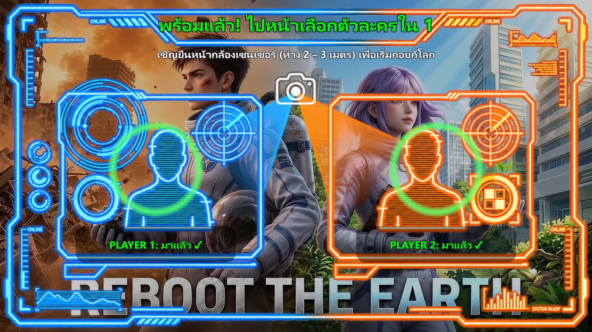
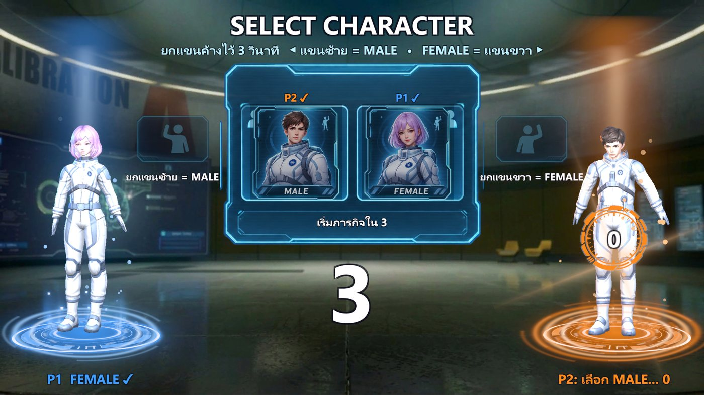
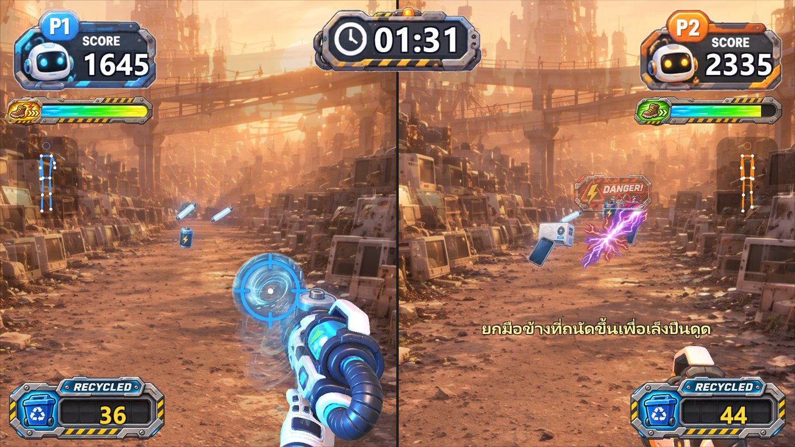
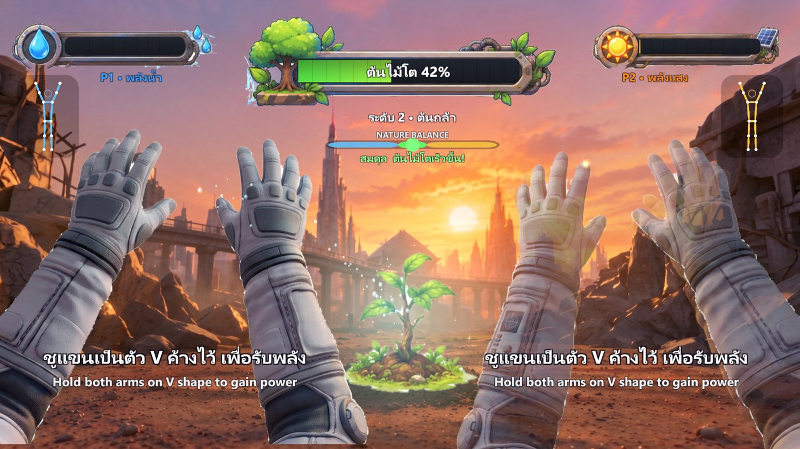
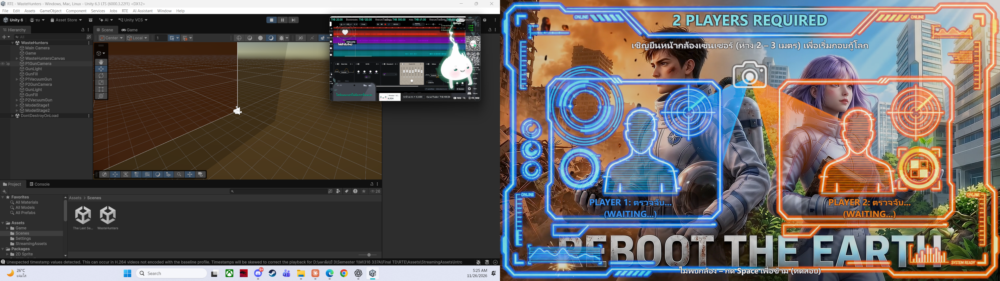

วิเคราะห์ด้วยเครื่องมือ /project-stage-detect ของ Game Studio ร่วมกับการอ่านโค้ด ฉาก และไฟล์ประกอบของเกมจริง วันที่ 26 พฤศจิกายน 2026




| ด้าน | สถานะ | รายละเอียด |
|---|---|---|
| ตัวเกม (โค้ด) | ครบลำดับ | สคริปต์ C# 44 ไฟล์ ประมาณ 6,000 บรรทัด ใน Assets/Game/ (Core 8, Intro 10, WasteHunters 14, LastSeed 8, Editor 4) และระบบกล้อง Python (YOLO + MediaPipe ส่งข้อมูลทาง UDP) |
| เอกสารออกแบบ | ยังไม่มี | ไม่มีโฟลเดอร์ design/ ระดับ minimal ต้องการแค่ design/game-brief.md ไฟล์เดียว ตอนนี้ข้อมูลลำดับเกมอยู่ใน README |
| สถาปัตยกรรม (ADR) | ไม่บังคับ | ยังไม่มี ADR ระดับ minimal ไม่ถือว่าเป็นช่องโหว่ |
| การผลิต | ทำต่อเนื่อง | ไม่ใช้ sprint ที่ระดับนี้ มีหลักฐานการทดสอบ 19 ชุดใน production/qa/evidence/ แต่มีงานที่ยังไม่ได้ commit จำนวนมาก |
| การทดสอบ | ไม่บังคับ | ฝั่ง Unity ยังไม่มีเทส ฝั่ง Python มี test_player_lock.py และตัวจำลองใน Python/dev/ |
| งาน | รายละเอียด |
|---|---|
| เสียงประกอบเพิ่มเติม | เพิ่มเสียง 3 ไฟล์ (join, alert, step) และใส่เสียงในจุดที่ยังเงียบ: ผู้เล่นเข้าวงหน้าปก, นับถอยหลังไปหน้าเลือกตัวละคร, เช็กลิสต์สอนเล่น, แถบเตือนหลุดกล้อง, ติ๊ก 5 วินาทีสุดท้าย, สเต็ปสอนเล่นภารกิจ 2, ตัวช่วยเร่งพลัง และสรุปผลกรณีหมดเวลา |
| แก้เสียงเกมไม่ออก | ทั้ง 2 ฉากไม่มี AudioListener Unity จึงไม่เล่นเสียงใด ๆ เลย เพิ่ม AudioListenerGuard.cs สร้างตัวรับเสียงให้อัตโนมัติทุกครั้งที่โหลดฉาก |
| เต็มจอจอที่สอง | เพิ่ม FullscreenGameView.cs (เฉพาะ Editor): กด Play แล้วถ้ามีจอที่สอง เกมจะขึ้นเต็มจออีกจอตามความละเอียดจริงของจอ โดยตัว Editor ยังแสดงหน้า Scene ไว้ เมื่อหยุด Play จะปิดเองและคืนค่าเดิม |

| # | ช่องโหว่ | ความสำคัญ | รายละเอียด และแนวทางแก้ |
|---|---|---|---|
| 1 | ยังไม่เคย build เป็น .exe | สูง | ไม่มีโฟลเดอร์ Builds/ ทั้งที่ตั้งคำสั่ง build ไว้แล้ว สคริปต์เต็มจอทำงานเฉพาะใน Editor, คำสั่ง run ตั้งเป็น 1280×720 แบบหน้าต่าง และต้องเปิด run_tracker.bat เอง
แก้: build แล้วทดสอบบนเครื่องที่ใช้จัดแสดงจริง พร้อมตั้งเต็มจอ/เลือกจอในตัว build |
| 2 | งานยังไม่ได้ commit | สูง | งานเสียง, AudioListener, เต็มจอ และการแก้ไขจากรอบก่อน (CharacterSelect, PlayerLane, TrashPiece, WasteEvents, WasteHunters, LastSeed) ยังไม่อยู่ใน git
แก้: commit ทั้งหมด (ทำแล้วพร้อมรายงานฉบับนี้) |
| 3 | ไม่มีอะไรเชื่อมภารกิจ 1 → 2 | สูง | สรุปผลภารกิจ 1 แล้วตัดเข้าหน้าสอนภารกิจ 2 ทันที ไม่มีเนื้อเรื่องคั่น ทั้งที่มีของเตรียมไว้แต่ยังไม่ได้ใช้: วิดีโอ StreamingAssets/intro.mp4 และเพลงคัตซีน valley-sunset, forest-mist-whispers
แก้: ทำฉากคั่นสั้น ๆ ด้วยวิดีโอและเพลงที่มีอยู่ |
| 4 | ไม่มีฉากจบรวมทั้ง 2 ภารกิจ | กลาง | จบภารกิจ 2 แล้วกลับหน้าปกเลย ไม่มีหน้า "กู้โลกสำเร็จ" หรือผลรวมของทีมจากทั้งสองภารกิจ |
| 5 | ไม่มีหน้าตั้งค่าสำหรับคนคุมบูธ | กลาง | ปรับเสียง เวลารอบ หรือจอแสดงผลระหว่างงานไม่ได้ ต้องแก้ใน Inspector ของ Unity (GameSettings, SeedSettings) ในเกมมีแค่ Esc, R, F1, F2 |
| 6 | ไม่มีเอกสาร game brief | กลาง | เอกสารเดียวที่ระดับ minimal ต้องมี ถ้ารายวิชาต้องส่งเอกสารออกแบบ ข้อนี้ควรขยับขึ้นเป็นความสำคัญสูง
แก้: /reverse-document design Assets/ เขียนจากเกมที่สร้างเสร็จแล้ว |
| 7 | Scene builder ไม่ใส่ AudioListener | ต่ำ | ตอนเล่นแก้แล้วด้วย AudioListenerGuard แต่ WasteHuntersSceneBuilder และ LastSeedSceneBuilder ยังสร้างกล้องโดยไม่มีตัวรับเสียง |
| 8 | ของค้างที่ควรเก็บกวาด | ต่ำ | Build Settings ยังมีฉาก Legacy/TrashBattle.unity ที่ไม่มีไฟล์แล้ว (ปิดไว้) และ TutorialScreen.cs, CoverScreen.cs ไม่มีโค้ดไหนเรียกใช้ |
| 9 | ไม่มีเทสฝั่ง Unity | ต่ำ | สูตรคะแนน, RUSH, การเติบโตของต้นไม้, ความสมดุล และ PERFECT SYNC เขียนเทสได้ง่าย ระดับ minimal ไม่บังคับ |
intro.mp4 และเพลงคัตซีนที่มีอยู่แล้วdesign/game-brief.md — ถ้ารายวิชาต้องใช้เอกสารออกแบบ| คำสั่ง | ใช้เมื่อ |
|---|---|
| /reverse-document design Assets/ | เขียน design/game-brief.md จากเกมที่สร้างแล้ว |
| /smoke-check | หลังมีตัว build แล้ว ก่อนนำไปจัดแสดง |
| /test-setup | ถ้าตัดสินใจเพิ่มเทสฝั่ง Unity (ช่องโหว่ข้อ 9) |
Assets/Game/Scripts/Core/ 8 ไฟล์ Assets/Game/Scripts/Intro/ 10 ไฟล์ Assets/Game/Scripts/WasteHunters/ 14 ไฟล์ Assets/Game/Scripts/LastSeed/ 8 ไฟล์ Assets/Game/Editor/ 4 ไฟล์ docs/architecture/ 0 ADR production/qa/evidence/ 19 ชุด Assets/Tests/ (ไม่มี) Python/dev/ เทส 1 ไฟล์ + ตัวจำลอง/เครื่องมือ 3 ไฟล์ design/ (ไม่มี)
ฉบับ Markdown ของรายงานนี้: production/project-stage-report.md